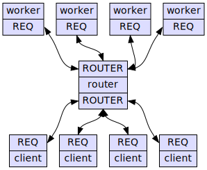

Concurrency with ZeroMQ
or: All Your Queues are Belong to Us
“There should be one … obvious way to do it”
threadingmultiprocessingasyncio- … and that's just in the stdlib
Why so many?
- No one solution is a panacea
- Some are good at shoving bits around (I/O)
- Some are good at twiddling bits on/off (processing)
- None are good at everything
- ZeroMQ is Yet Another solution, it's not The Solution
The accounting problem
| Task 1 | Task 2 |
|---|
acc = 1000 | |
acc = acc + 100 | acc = acc - 100 |
| | acc == 1000? |
The accounting problem
| Task 1 | Task 2 |
|---|
acc IS 1000 | |
LOAD acc | LOAD acc |
ADD 100 | SUB 100 |
SAVE acc | SAVE acc |
| | acc IS 1000? |
Solutions
- Control yield points
- Lock to serialize access
ZeroMQ
Not really about queues
ZeroMQ
Sockets on steroids
ZeroMQ “sockets”
- Most of the nice bits
- None of the nasty bits
- Lots of really useful, but simple, patterns
Sockets: the nice bits
import socket
s = socket.socket()
s.connect(('somehost', 8080))
s.send(b'DATA')
s.recv(8)
s.close()
Sockets: the nasty bits
import socket
s = socket.socket()
s.setsockopt(socket.SOL_SOCKET, socket.SO_REUSEPORT, 1)
s.bind(('0.0.0.0', 8080))
s.listen(1)
c, addr = s.accept() # another socket per connection?!
c.send(b'DATA')
c.recv(8)
c.close()
s.close()
ZeroMQ: it's all nice bits!
import zmq
ctx = zmq.Context.instance()
server = ctx.socket(zmq.PULL)
server.bind('inproc://foo')
client = ctx.socket(zmq.PUSH)
client.connect('inproc://foo')
client.send(b'DATA')
print(repr(server.recv()))
How about >1 client?
import zmq
ctx = zmq.Context.instance()
server = ctx.socket(zmq.PULL)
server.bind('inproc://foo')
clients = [ctx.socket(zmq.PUSH) for i in range(10)]
for client in clients:
client.connect('inproc://foo')
client.send(b'DATA')
for i in range(10):
print(repr(server.recv()))
Backwards?
import zmq
ctx = zmq.Context.instance()
server = ctx.socket(zmq.PUSH)
server.bind('inproc://foo')
clients = [ctx.socket(zmq.PULL) for i in range(10)]
poller = zmq.Poller()
for client in clients:
client.connect('inproc://foo')
poller.register(client, zmq.POLLIN)
for client in clients:
server.send(b'DATA')
for sock, flags in poller.poll(0):
print(sock, repr(sock.recv()))
Two way?
import zmq
ctx = zmq.Context.instance()
server = ctx.socket(zmq.REP)
server.bind('inproc://foo')
clients = [ctx.socket(zmq.REQ) for i in range(10)]
for i, client in enumerate(clients):
client.connect('inproc://foo')
client.send_string('FOO%d' % i)
while server.poll(100):
msg = server.recv_string()
server.send_string(msg.replace('FOO', 'BAR'))
for client in clients:
print(client.recv_string())
Async responses
import zmq
ctx = zmq.Context.instance()
server = ctx.socket(zmq.ROUTER)
server.bind('inproc://foo')
clients = [ctx.socket(zmq.REQ) for i in range(10)]
for i, client in enumerate(clients):
client.connect('inproc://foo')
client.send_string('FOO%d' % i)
messages = []
while server.poll(0):
messages.append(server.recv_multipart())
for msg in messages:
print(repr(msg))
Async responses
# ...
messages = []
while server.poll(0):
messages.append(server.recv_multipart())
for addr, empty, msg in messages:
msg = msg.decode('utf-8')
msg = msg.replace('FOO', 'BAR')
msg = msg.encode('utf-8')
server.send_multipart([addr, empty, msg])
for client in clients:
print(client.recv_string())
Distribution
import zmq
ctx = zmq.Context.instance()
server = ctx.socket(zmq.PUB)
server.bind('inproc://foo')
clients = [ctx.socket(zmq.SUB) for i in range(10)]
for i, client in enumerate(clients):
client.connect('inproc://foo')
client.subscribe('') # modern version...
server.send_string('FOO')
for client in clients:
print(client.recv_string())
Socket types
| Socket 1 | | Socket 2 |
|---|
| PUSH | → | PULL |
| REQ | ↔ | REP |
| REQ | ↔ | ROUTER |
| PUB | → | SUB |
Transmission types
| Send | Receive | Transmits |
|---|
| send | recv | bytes |
| send_multipart | recv_multipart | [bytes] |
| send_string | recv_string | str |
| send_json | recv_json | object |
| send_pyobj | recv_pyobj | object |
| send_serialized | recv_serialized | object |
Building with ZeroMQ
- Divide script into simple tasks
- No sharing state!
- All communication between tasks over queues
- Don't use locks (or events, conditions, etc.)
A terrible RNG
from random import random
from time import time, sleep
def get_random(lo=0, hi=1):
start = time()
sleep(lo + random() * (hi - lo))
return time() - start
A terrible RNG server
import zmq
from random import random
from time import time, sleep
def get_random(lo=0, hi=1):
start = time()
sleep(lo + random() * (hi - lo))
return time() - start
ctx = zmq.Context.instance()
sock = ctx.socket(zmq.REP)
sock.bind('ipc:///tmp/random')
while True:
lo, hi = sock.recv_json()
sock.send_json(get_random(lo, hi))
A terrible RNG client
import zmq
ctx = zmq.Context.instance()
sock = ctx.socket(zmq.REQ)
sock.connect('ipc:///tmp/random')
def get_random(lo=0, hi=1):
sock.send_json([lo, hi])
return sock.recv_json()
for i in range(10):
print(get_random())
Solution: load sharing!

Load sharing worker
import zmq
from random import random
from time import time, sleep
def get_random(lo=0, hi=1):
start = time()
sleep(lo + random() * (hi - lo))
return time() - start
ctx = zmq.Context.instance()
sock = ctx.socket(zmq.REQ)
sock.connect('ipc:///tmp/router')
sock.send(b'READY')
while True:
lo, hi = sock.recv_json()
sock.send_json(get_random(lo, hi))
Load sharing router
import zmq
ctx = zmq.Context.instance()
back = ctx.socket(zmq.ROUTER)
back.bind('ipc:///tmp/router')
front = ctx.socket(zmq.ROUTER)
front.bind('ipc:///tmp/random')
ready = []
busy = {}
poller = zmq.Poller()
poller.register(back, zmq.POLLIN)
poller.register(front, zmq.POLLIN)
while True:
for sock, flags in poller.poll(1000):
if sock == back:
worker, _, response = back.recv_multipart()
if response != b'READY':
client = busy.pop(worker)
front.send_multipart([client, _, response])
ready.append(worker)
elif sock == front:
if ready:
client, _, request = front.recv_multipart()
worker = ready.pop(0)
busy[worker] = client
back.send_multipart([worker, _, request])
TODO
- Request timeout
- Server heartbeat
- Distributed routers
- Security!